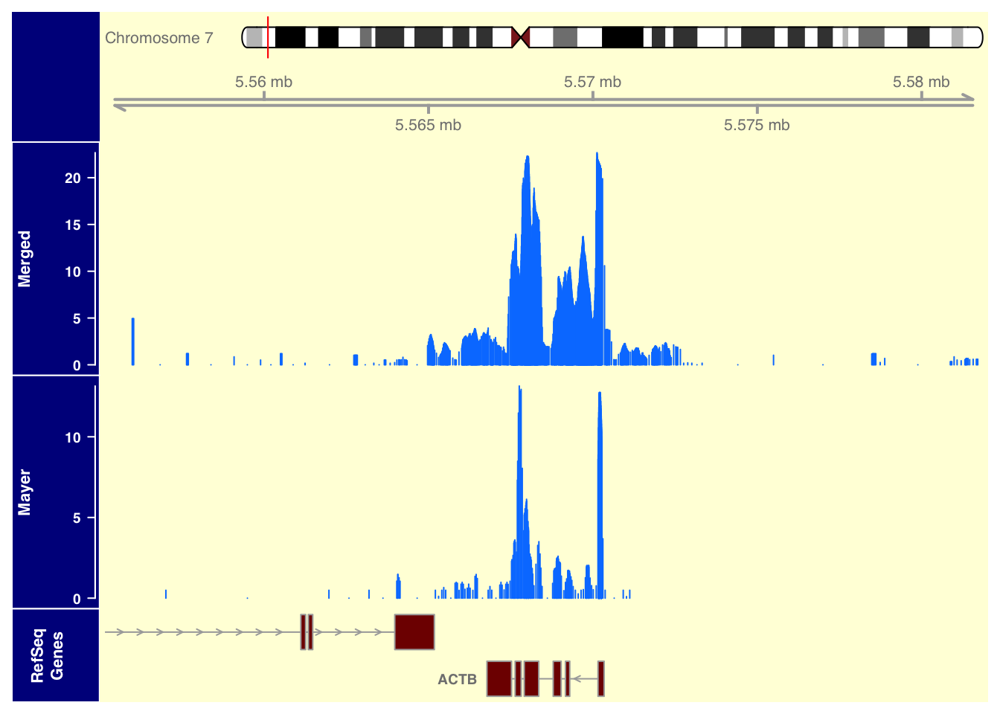
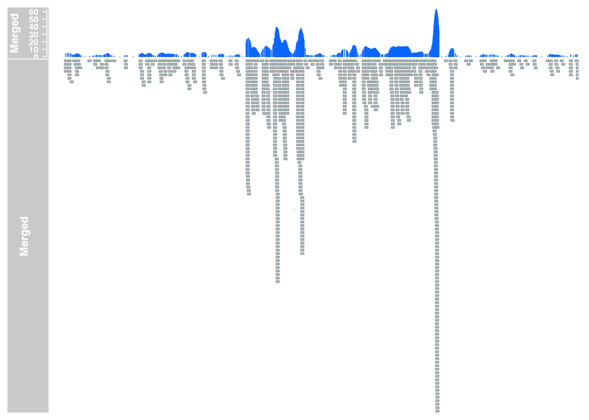
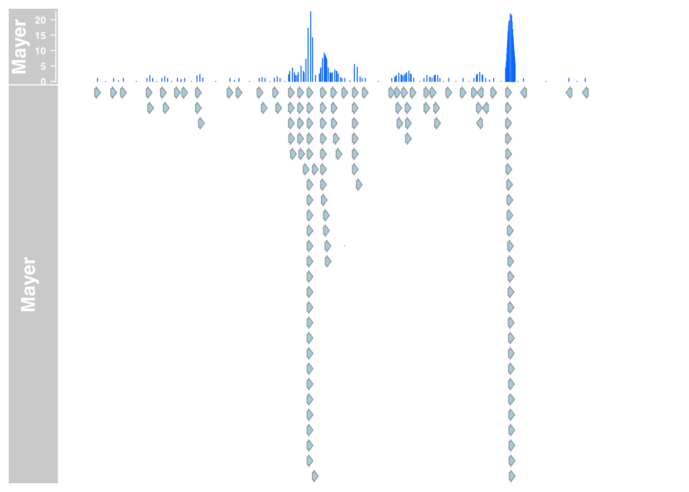

Last updated: 2017-12-19
Code version: 1d63e1d
The goal of this analysis is to create nice plots showing that we are getting as much information as the 1 lane from the Mayer sample. I will do this with our merged data vs. their 1 lane.
Genes from IGV that I want to use:
HERPUD1 chr16:56,964,002-56,979,793
ACTB chr7:5,564,779-5,572,232
CCNB2 chr15:59,396,707-59,401,006
chr11:234,336-239,997
KIAA0100 chr17:26,968,078-26,974,887
HECTD1 chr14:31,672,040-31,681,043
STAG1 chr3:136,469,421-136,472,771
SRSF3
ENO1
Load Packages:
library(Gviz)Loading required package: S4VectorsLoading required package: stats4Loading required package: BiocGenericsLoading required package: parallel
Attaching package: 'BiocGenerics'The following objects are masked from 'package:parallel':
clusterApply, clusterApplyLB, clusterCall, clusterEvalQ,
clusterExport, clusterMap, parApply, parCapply, parLapply,
parLapplyLB, parRapply, parSapply, parSapplyLBThe following objects are masked from 'package:stats':
IQR, mad, sd, var, xtabsThe following objects are masked from 'package:base':
anyDuplicated, append, as.data.frame, cbind, colMeans,
colnames, colSums, do.call, duplicated, eval, evalq, Filter,
Find, get, grep, grepl, intersect, is.unsorted, lapply,
lengths, Map, mapply, match, mget, order, paste, pmax,
pmax.int, pmin, pmin.int, Position, rank, rbind, Reduce,
rowMeans, rownames, rowSums, sapply, setdiff, sort, table,
tapply, union, unique, unsplit, which, which.max, which.min
Attaching package: 'S4Vectors'The following object is masked from 'package:base':
expand.gridLoading required package: IRangesLoading required package: GenomicRangesLoading required package: GenomeInfoDbLoading required package: gridlibrary(GenomicRanges)
library(biomaRt)
library(TxDb.Hsapiens.UCSC.hg19.knownGene)Loading required package: GenomicFeaturesLoading required package: AnnotationDbiLoading required package: BiobaseWelcome to Bioconductor
Vignettes contain introductory material; view with
'browseVignettes()'. To cite Bioconductor, see
'citation("Biobase")', and for packages 'citation("pkgname")'.library("IRanges")
library("dplyr")
Attaching package: 'dplyr'The following object is masked from 'package:AnnotationDbi':
selectThe following object is masked from 'package:Biobase':
combineThe following object is masked from 'package:biomaRt':
selectThe following objects are masked from 'package:GenomicRanges':
intersect, setdiff, unionThe following object is masked from 'package:GenomeInfoDb':
intersectThe following objects are masked from 'package:IRanges':
collapse, desc, intersect, setdiff, slice, unionThe following objects are masked from 'package:S4Vectors':
first, intersect, rename, setdiff, setequal, unionThe following objects are masked from 'package:BiocGenerics':
combine, intersect, setdiff, unionThe following objects are masked from 'package:stats':
filter, lagThe following objects are masked from 'package:base':
intersect, setdiff, setequal, unionlibrary("data.table")
Attaching package: 'data.table'The following objects are masked from 'package:dplyr':
between, first, lastThe following object is masked from 'package:GenomicRanges':
shiftThe following object is masked from 'package:IRanges':
shiftThe following objects are masked from 'package:S4Vectors':
first, secondlibrary("GenomicAlignments")Loading required package: SummarizedExperimentLoading required package: DelayedArrayLoading required package: matrixStats
Attaching package: 'matrixStats'The following object is masked from 'package:dplyr':
countThe following objects are masked from 'package:Biobase':
anyMissing, rowMedians
Attaching package: 'DelayedArray'The following objects are masked from 'package:matrixStats':
colMaxs, colMins, colRanges, rowMaxs, rowMins, rowRangesThe following object is masked from 'package:base':
applyLoading required package: BiostringsLoading required package: XVector
Attaching package: 'Biostrings'The following object is masked from 'package:DelayedArray':
typeThe following object is masked from 'package:base':
strsplitLoading required package: Rsamtools
Attaching package: 'GenomicAlignments'The following object is masked from 'package:data.table':
lastThe following object is masked from 'package:dplyr':
lastUpload data:
chr= "chr7"
gen= "hg19"
merged_data_7= DataTrack(range = "../data/bam_files_chr/merged_Net1_chr.bam", genome = gen, type = "h", name = "Merged", window = -1, chromosome = "chr7")
mayer_data_7= DataTrack(range = "../data/bam_files_chr/mayer_chr.bam", genome = gen, type = "h", name = "Mayer", window = -1, chromosome = "chr7")
refGenes <- UcscTrack(genome= gen, chromosome=chr,
track="RefSeq Genes", from = 5555158, to = 5581854,
trackType="GeneRegionTrack", rstarts="exonStarts",
rends="exonEnds", gene="name", symbol="name2",
transcript="name", strand="strand", fill="#800000", name="RefSeq Genes", showId=TRUE)
gtrack = GenomeAxisTrack()
itrack= IdeogramTrack(genome = gen, chromosome = chr)
#plots
plotTracks(list(itrack,gtrack, merged_data_7, mayer_data_7, refGenes), from = 5555158, to = 5581854, background.title="darkblue", background.panel = "#FFFEDB")
merged_anno_7= AnnotationTrack(range = "../data/bam_files_chr/merged_Net1_chr.bam", genome = gen, name = "Merged", window = -1, chromosome = chr)
mayer_anno_7= AnnotationTrack(range = "../data/bam_files_chr/mayer_chr.bam", genome = gen, name = "Mayer", window = -1, chromosome = chr)
plotTracks(list(merged_data_7, merged_anno_7), from = 5564779, to = 5572232)
plotTracks(list(mayer_data_7,mayer_anno_7), from = 5564779, to = 5572232)
track_plot=function(chrom, from, to){
gen= "hg19"
chr= chrom
merged_data= DataTrack(range = "../data/bam_files_chr/merged_Net1_chr.bam", genome = gen, type = "h", name = "Merged", window = -1, chromosome = chr)
mayer_data= DataTrack(range = "../data/bam_files_chr/mayer_chr.bam", genome = gen, type = "h", name = "Mayer", window = -1, chromosome = chr)
refGenes <- UcscTrack(genome= gen, chromosome=chr,
track="RefSeq Genes", from = from, to = to,
trackType="GeneRegionTrack", rstarts="exonStarts",
rends="exonEnds", gene="name", symbol="name2",
transcript="name", strand="strand", fill="#800000", name="RefSeq Genes", showId=TRUE)
gtrack = GenomeAxisTrack()
itrack= IdeogramTrack(genome = gen, chromosome = chr)
plot= plotTracks(list(itrack,gtrack, merged_data, mayer_data, refGenes), from = from, to = to, background.title="darkblue", background.panel = "#FFFEDB")
return(plot)
}#plot_SRSF3= track_plot("chr6",36564332,36571507)#plot_ENO1=track_plot("chr1",8919652,8940558 )#plot_tars=track_plot("chr5",33438802,33468000)#plot_CAXN= track_plot("chr5",179123129,179159838)
#future: change track size with sizes=c(5,1,5) commpand in plot track
#plot_ALDOA= track_plot("chr16",30080421,30082314)
#plot_XRCC5= track_plot("chr2", 216968869,217009667)
#plot_TUBB= track_plot("chr6",30684274,30698626)Add the chr tag to the bam files.
samtools view -h SRR1575922-sort.bam | awk 'BEGIN{FS=OFS="\t"} (/^@/ && !/@SQ/){print $0} $2~/^SN:[1-9]|^SN:X|^SN:Y|^SN:MT/{print $0} $3~/^[1-9]|X|Y|MT/{$3="chr"$3; print $0} ' | sed 's/SN:/SN:chr/g' | sed 's/chrMT/chrM/g' | samtools view -bS - > mayer_chr.bam
samtools view -h merged_Net1.bam | awk 'BEGIN{FS=OFS="\t"} (/^@/ && !/@SQ/){print $0} $2~/^SN:[1-9]|^SN:X|^SN:Y|^SN:MT/{print $0} $3~/^[1-9]|X|Y|MT/{$3="chr"$3; print $0} ' | sed 's/SN:/SN:chr/g' | sed 's/chrMT/chrM/g' | samtools view -bS - > merged_Net1_chr.bamindex the bam files:
samtools index mayer_chr.bam
samtools index merged_Net1_chr.bamsessionInfo()R version 3.4.2 (2017-09-28)
Platform: x86_64-apple-darwin15.6.0 (64-bit)
Running under: macOS Sierra 10.12.6
Matrix products: default
BLAS: /Library/Frameworks/R.framework/Versions/3.4/Resources/lib/libRblas.0.dylib
LAPACK: /Library/Frameworks/R.framework/Versions/3.4/Resources/lib/libRlapack.dylib
locale:
[1] en_US.UTF-8/en_US.UTF-8/en_US.UTF-8/C/en_US.UTF-8/en_US.UTF-8
attached base packages:
[1] grid parallel stats4 stats graphics grDevices utils
[8] datasets methods base
other attached packages:
[1] GenomicAlignments_1.14.1
[2] Rsamtools_1.30.0
[3] Biostrings_2.46.0
[4] XVector_0.18.0
[5] SummarizedExperiment_1.8.0
[6] DelayedArray_0.4.1
[7] matrixStats_0.52.2
[8] data.table_1.10.4-3
[9] dplyr_0.7.4
[10] TxDb.Hsapiens.UCSC.hg19.knownGene_3.2.2
[11] GenomicFeatures_1.30.0
[12] AnnotationDbi_1.40.0
[13] Biobase_2.38.0
[14] biomaRt_2.34.0
[15] Gviz_1.22.2
[16] GenomicRanges_1.30.0
[17] GenomeInfoDb_1.14.0
[18] IRanges_2.12.0
[19] S4Vectors_0.16.0
[20] BiocGenerics_0.24.0
loaded via a namespace (and not attached):
[1] ProtGenerics_1.10.0 bitops_1.0-6
[3] bit64_0.9-7 RColorBrewer_1.1-2
[5] progress_1.1.2 httr_1.3.1
[7] rprojroot_1.2 tools_3.4.2
[9] backports_1.1.2 R6_2.2.2
[11] rpart_4.1-11 Hmisc_4.0-3
[13] DBI_0.7 lazyeval_0.2.1
[15] colorspace_1.3-2 nnet_7.3-12
[17] gridExtra_2.3 prettyunits_1.0.2
[19] RMySQL_0.10.13 bit_1.1-12
[21] curl_3.1 compiler_3.4.2
[23] git2r_0.19.0 htmlTable_1.11.0
[25] rtracklayer_1.38.2 scales_0.5.0
[27] checkmate_1.8.5 stringr_1.2.0
[29] digest_0.6.13 foreign_0.8-69
[31] rmarkdown_1.8 base64enc_0.1-3
[33] dichromat_2.0-0 pkgconfig_2.0.1
[35] htmltools_0.3.6 ensembldb_2.2.0
[37] BSgenome_1.46.0 htmlwidgets_0.9
[39] rlang_0.1.4 rstudioapi_0.7
[41] RSQLite_2.0 BiocInstaller_1.28.0
[43] shiny_1.0.5 bindr_0.1
[45] BiocParallel_1.12.0 acepack_1.4.1
[47] VariantAnnotation_1.24.2 RCurl_1.95-4.8
[49] magrittr_1.5 GenomeInfoDbData_0.99.1
[51] Formula_1.2-2 Matrix_1.2-12
[53] Rcpp_0.12.14 munsell_0.4.3
[55] stringi_1.1.6 yaml_2.1.16
[57] zlibbioc_1.24.0 plyr_1.8.4
[59] AnnotationHub_2.10.1 blob_1.1.0
[61] lattice_0.20-35 splines_3.4.2
[63] knitr_1.17 XML_3.98-1.9
[65] glue_1.2.0 evaluate_0.10.1
[67] biovizBase_1.26.0 latticeExtra_0.6-28
[69] httpuv_1.3.5 gtable_0.2.0
[71] purrr_0.2.4 tidyr_0.7.2
[73] assertthat_0.2.0 ggplot2_2.2.1
[75] mime_0.5 xtable_1.8-2
[77] AnnotationFilter_1.2.0 survival_2.41-3
[79] tibble_1.3.4 memoise_1.1.0
[81] bindrcpp_0.2 cluster_2.0.6
[83] interactiveDisplayBase_1.16.0This R Markdown site was created with workflowr